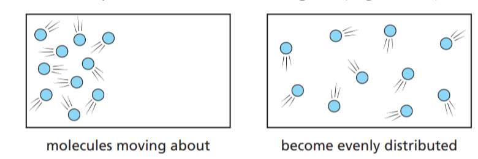

开发者手册
混沌系统并不是随机系统。混沌研究的是秩序与随机性之间的过渡 --- 詹姆斯·格雷克
1.1 引言
大气的运动会引起污染物浓度在时空上的变化，在空气质量数值模式的语境中， 污染物的湍流扩散是指由风引起，大尺度风场无法直接模拟的那部分污染物浓度变化过程。
风矢量是时空上的连续函数，但数值模式对大气方程进行了离散化，使得风矢量仅在网格点上计算。 离散化后的风矢量（代表某一尺度的风）只能描述一个网格内、某段时间内（即一个时空网格）的平均状态或代表性风场。
从物理意义上讲，根据质量守恒原理(连续方程)，大气运动是连续发生的。而离散化的风矢量无法准确描述的、 由次网格风引起的污染物浓度再分配，正是湍流扩散所对应的部分。
在风场的雷诺分解 (Reynolds Decomposition) 中， 代表扰动部分（次网格风）， 即小尺度、快速变化的风场成分。
通过对连续方程(一维)进行雷诺分解可得：
其中，公式 1.4 右边的第二项即为扩散项（湍流扩散项）的数学表达。 该项描述了湍流对浓度分配的贡献，使得离散化后的连续方程在数学上得以闭合。

需要注意的是，雷诺分解后的时间平均项代表的是平滑的背景场（时空平滑），依然是一个连续函数。 而数值离散化则可以理解为对雷诺分解后的时间平均项进行离散采样， 即在有限的网格点上近似表示这一连续背景场。
1.2 K理论
由于未知，因此需要采用参数化方案来估算扩散项的影响。 在气象学和大气污染扩散研究中， 通常采用一阶涡流粘度方法（k理论、一阶闭合、梯度扩散假设）来求解湍流项， K理论假设湍流扩散与分子扩散类似，引入了一个湍流扩散系数来代替分子扩散系数 .
为什么能把湍流扩散类比为分子扩散？尽管它们的物理机制和作用范围不同（流体的馄钝性、分子的不规则运动）， 这两种扩散机制在物质传输过程中具有一定的相似性。
-
高浓度向低浓度扩散：大气中的湍流扩散和分子扩散的基本原理都是物质在不同浓度梯度下的流动， 最终使得浓度达到均衡。
-
随机性：分子扩散是由分子的热运动引起的随机过程， 而湍流扩散是由气流中的湍流湍动引起的随机过程（在雷诺分解表现为均值为0的白噪音）。

散的速率直观上与物质浓度差以及介质和环境条件（如气压、温度等）密切相关。根据菲克定律（可以看看热传导方程）， 分子扩散的通量公式为：
为了描述湍流导致的浓度演变，引入湍流扩散系数 （）， 湍流扩散的通量公式为：
需要注意，等式右侧的浓度梯度是通过雷诺分解后的平均项获得的，在后续的公式中， 在后续公式推导中，为了简化表示， 记作 。
为了解决一致性问题（气象模式和空气质量模式的离散方案不同），用混合比 来表示浓度，
其中 ， 假设密度的扰动可以忽略（小尺度空气密度的变化应该远远小于污染物浓度的变化）， 也就是 。那么
因此
因此湍流扩散项为:
推广到三维情况
对于地球大气而言，水平方向的湍流主要由风速剪切引起，而垂直方向的湍流则主要受温度梯度的影响。 因此，数值模式通常分别处理污染物的水平扩散和垂直扩散。
1.3 水平扩散
相较于水平输送，水平扩散的影响通常较小，在某些情况下甚至可以忽略不计。
根据 Smagorinsky (1963) 公式，可求解水平扩散系数
其中： - 是 Smagorinsky 常数（通常取 0.1 - 0.25，大气应用中常用 0.2）。 - 是网格尺度（通常定义为网格间距的几何平均：）。 - 是水平速度的二阶张量的模量，定义为：
可以增加一个常数，让模拟的浓度变得更加光滑（Anthes and Warner, 1978）。
其中的值为
为了便于通量计算，水平扩散系数 通常是在 Arakawa C 网格上定义，对于一个网格单元，其四条边上的每一条边均需计算一个值，以准确描述水平扩散过程。
的计算涉及到速度的空间差分，采用中值差分方案求速度梯度。
在求解 v-stag 网格点上的 在 u-stag 网格上的梯度时，需要首先将 从 v-stag 网格插值到 mass 网格。为了简单，通常采用线性插值方法。
因此
对于扩散方程，采用前向欧拉进行时间差分。
而在计算浓度梯度时，采用中值差分方案计算浓度梯度（注意计算的是 u-stag 或者 v-stag 网格上的浓度梯度）。
因此，最后的积分表达式为
注意扩散是从高浓度到低浓度，始终大于0，浓度梯度决定通量的方向。
1.4 垂直扩散
白天行星边界层中湍流作用较强，垂直扩散在污染物的垂直浓度分布中起着至关重要的作用。
垂直方向的湍流，受温度梯度的影响和风切边的功能影响，因此垂直扩散系数的求解更为复杂。 该模块中不实现垂直扩散系数的计算。
在已知垂直扩散系数，用数值方法求解垂直扩散方程的难点在于垂直层网格的大小变化较为明显(从 10 ~ 1000m )。
采用显示的时间积分方案会要求 dt 非常小，会显著增加计算时间，因此通常采用隐式的时间积分方案。
与水平扩散一样，在计算浓度梯度时，采用中值差分方案计算浓度梯度（注意计算的是 w-stag 网格上的浓度梯度，做密度平均的时候，忽略了两层厚度之间的差异，同时任务两个格点中心之间的梯度处处相等）。
而时间差分方案选用后向欧拉。
带入浓度梯度公式
假设
则
将后向欧拉方程改写为矩阵形式 ，其中为
的三对角元素表达式如下：
-
下对角线元素（第 行，第 列）：
-
主对角线元素（第 行，第 列）：
-
上对角线元素（第 行，第 列）：
1.5 参考文献
- Smagorinsky J. General circulation experiments with the primitive equations: I. The basic experiment[J]. Monthly weather review, 1963, 91(3): 99-164.
- Anthes R A, Warner T T. Development of hydrodynamic models suitable for air pollution and other mesometerological studies[J]. Monthly Weather Review, 1978, 106(8): 1045-1078.